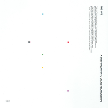

"Chance The Rapper should not be making songs. Dude sucks and he should quit the music industry before he makes an even bigger fool of himself!"
--Johnny Sins (Writer, Music Producer, Journalist, Travel Guru)
Do you agree?
"Lil Nas X is a one-hit-wonder. He's never going to top up 'Old Town Road'. His career is over, so he should just stop right there and accept the fact that a good comeback is a slim-to-none chance."
--Nicholas Cage (Music Producer, Author, Music Director)
Do you agree?
Hearspace Weekly Top 5:
1. HotRod - Dayglow
Very colorful tunes and lyrics delivered by Dayglow's debut album 'Fuzzybrain'.The song is a 'feels good' type-of-vibe with harmonic funky guitar riffs and playful piano blending in together creating a pastel like taste to the listeners.

2. A Brief Inquiry on Online Relationships - The 1975
The 1975 is never shy from experimenting with sounds and their new track 'A Brief Inquiry on Online Relationships' truly delivered. This is the type of experimenting that works in numerous ways by the condensed pattern of tunes to the bewitching lyrics.
3. Face-to-Face - Rex Orange County
Face-to-Face takes a new approach in Rex Orange County's style in music. Taking that stpe is a very risky path, but it seems like it worked out perfectly for this band. Funk takes a new direction with this track and the lead vocalist 'Alexander O Connor' of the band takes his lyrical game to the next level.
4. Frank Ocean - Forrest Gump
Frank Ocean takes 'Forrest Gump' into a sensual tone with hypnotic lyrics and slow-paced tunes. A truly sexy track.
5. Post Malone - Circles
Post Malone with a comeback track to kick off this year with a banger. Not only do we see this guy showing his rap skills, but he takes on the approach of pop which this track proves to be worthy. A truly unexpected turn for Post, but it works nevertheless.